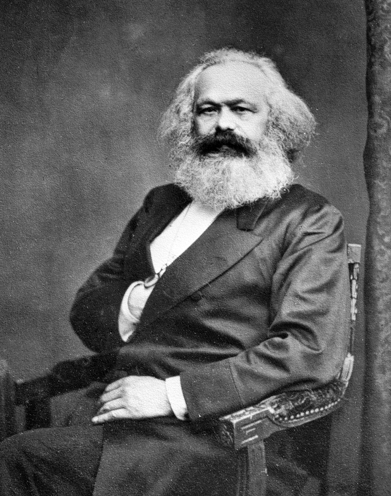

Source: WikipediaAlmost 100 million people died in the 20th century due to poltical and economic ideologies stemming from a drunkard who lived in a filthy shack and hated bathing.
A poor student drawn to controversial political ideology like a moth to flame, Marx was expelled for radical journalism in Paris and Belgium until settling down in London, where he would write the Communist Manifesto and his magnum opus, Das Kapital. Marx describes in his works the class struggle that results from capitalism between the working-class proletariat and capital-owning bourgeoisie and the hardships that the proletariat face when they have their freedom and creativity stifled by capitalism.
His works would inspire other influential future leaders that include but are not limited to some recognizable names such as Vladimir Lenin, Leon Trotsky, Joseph Stalin, Nikita Krushchev, Mao Zedong, Xi Jiping, Josip Tito, Fidel Castro, Kim Il-Sung, and Adolf Hitler.
He died a stateless man with only eight mourners at his funeral, though only decades after his death Russia had already begun their communist revolution, overthrowing their monarchy and establishing the first socialist state. After World War II, Eastern Europe, China, Cuba, and North Korea became Communist, and thus began the Cold War, an icy geopolitical struggle between communism and capitalism.
In the present day, Marx's legacy is still alive and well. Even though only five communist countries remain, Scandinavian nations such as Norway have embraced the idea of a mixed economy, in which capitalist gains are shared with the entire population, and radical liberal groups around the world look towards democratic socialism to potentially mitigate the class wars that have plagued humanity since its beginning.